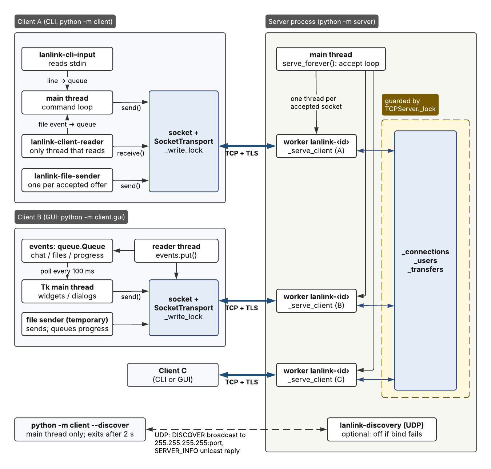

LanLink is a chat and file-transfer application for a local network, made of a server and clients with a command-line interface or an optional Tkinter GUI. One server runs on one host of the LAN. Each client keeps one TCP connection to it for the whole session, protected by TLS on the LAN. The server relays all traffic; clients never connect to each other.
Figure 1 shows the server's accept loop, connection workers and shared registries, together with CLI and GUI clients and the UDP discovery path. Both interfaces reuse the same connection, authentication and transfer code.

The server's main thread accepts TCP connections and starts one worker for each
accepted socket. That worker performs the TLS handshake and the HELLO exchange,
then handles authentication and later requests in its message loop. Running the
handshake in the worker leaves the accept loop free to handle further connections,
subject to the connection limit.
Workers share registries of connections, authenticated users and file transfers. When forwarding a message, the sending connection's worker looks up the recipient and writes to that recipient's socket through the connection transport.
A separate discovery thread answers UDP DISCOVER requests with SERVER_INFO.
Discovery is optional: if the UDP port is unavailable because of a permission error
or an address conflict, the server prints a warning and continues serving TCP clients.
The CLI has three persistent threads: main, input and socket reader. The GUI has two: the Tk main thread and socket reader. Its reader callbacks enqueue chat, file and progress events; only the Tk thread updates widgets, polling that queue with a 100 ms timer. Each accepted outgoing transfer starts a temporary sender thread. Table 2 in Section 1.3.1 gives their roles and responsibilities.
Layered organisation separates networking responsibilities [1]. Table 1 groups the modules into user-interface, network and data-processing layers.
Table 1. Layer separation: modules per layer.
| Layer | Modules |
|---|---|
| User interface | client/__main__.py, client/display.py, client/gui.py |
| Network | common/transport.py, common/tls.py, common/handshake.py, client/connection.py, client/discovery.py, client/private_chat.py, server/app.py, server/discovery.py, server/sessions.py |
| Data processing | common/protocol.py, common/builders.py, common/models.py, common/errors.py, transfer/*.py, server/auth.py |
The codec and transfer engine contain no socket or TLS imports; the automated layering
test checks this boundary. The transfer engine uses locks and cancellation flags but
starts no threads. The network layer handles the HELLO exchange and dispatches
incoming messages to the codec and transfer engines.
The server uses blocking socket operations with timeouts and one worker per connection. The Python socket HOWTO describes using a separate thread to handle each accepted connection [2]. It allows up to 64 simultaneous connections by default and closes further sockets after accepting them. Workers release the shared registry lock before socket reads, writes or password hashing. A slow recipient can still delay workers forwarding to its connection.
Table 2 lists the threads used by the server and client. With N connection workers and discovery enabled, the server runs N + 2 threads. A logged-in CLI runs three persistent threads; the logged-in GUI runs two. Both add one sender thread per outgoing transfer that is sending.
Table 2. Threads on the server and the client.
| Thread | What it does | How many |
|---|---|---|
| Server main thread | Accept loop (0.1 s accept timeout); starts discovery and one worker per accepted socket; closes sockets above --max-clients; on shutdown, joins all workers |
1 |
| Server discovery thread | Answers each valid DISCOVER with a unicast SERVER_INFO; daemon |
0 or 1 (0 if the UDP bind fails) |
| Server connection worker | TLS handshake, HELLO, login, request loop, cleanup; also writes forwarded chat and file messages onto other clients' connections; after HELLO, sets read-polling deadlines at most 0.5 s ahead |
1 per connection, at most --max-clients (default 64) |
| Client main thread | CLI: consumes typed commands and file events. GUI: runs Tk, renders queued events and handles dialogs. Both send requests synchronously and wait for replies | 1 |
| Client input thread (CLI only) | Reads one stdin line per prompt and queues it; end of input becomes /logout; daemon |
1 in CLI; none in GUI |
| Client reader thread | Only socket reader: matches replies by ref_request_id, feeds file messages to engines and sends replies such as FILE_RESULT. CLI prints chats; GUI callbacks enqueue them. Not a daemon; joined on close |
1 |
| Client file-sender thread | Sends every FILE_CHUNK and the FILE_END; daemon |
1 per accepted outgoing transfer |
Client main thread (--discover or handshake-only run) |
One broadcast, collects SERVER_INFO replies for 2 s, exits; or one HELLO exchange, then exit |
1 |
After HELLO, the worker's receive loop sets read deadlines no more than 0.5 s ahead.
On a read timeout it checks transfer deadlines and whether the connection is closing.
This polling supports connection cleanup during Windows operation (Section 4.3);
time spent writing, processing messages or waiting for locks is outside the read deadline.
The concurrency test connects 20 clients and performs their HELLO exchanges in
parallel, then checks that all 20 workers are alive. It uses plaintext loopback
connections and does not measure an authenticated chat or file-transfer workload.
Table 3 identifies the locks, the data they protect and whether they are held during socket reads or writes.
Table 3. Locks, what they protect and whether they are held during socket I/O.
| Lock | Protects | Held during socket I/O |
|---|---|---|
| Server registry lock | connections, users and file transfers; connection state; transfer status and deadline; the atomic check-and-insert at login | never while a thread reads or writes a socket or hashes a password (the accept loop does close an over-cap socket and start a worker under it) |
| Per-transfer lock | the order in which one transfer's messages are checked and forwarded | yes, while forwarding to the other party or sending ERROR to both |
| Connection write lock | one sendall() of one whole frame |
yes (its purpose) |
| Client session lock | pending requests, incoming offers, live transfers, the stored connection error | never |
| Transfer-engine reentrant lock | one transfer's client-side state | never; callbacks run after it is released |
When server locks are nested, the transfer lock comes before the registry or socket
write lock. The registry lock is released before acquiring a transfer or write lock, and
the write lock is held only around sendall(). On the client, the shared session
lock and engine locks are not nested; engine callbacks run after the engine lock
is released.
Several threads can write to the same connection. Each connection transport holds its write lock for one complete frame, preventing concurrent frames from interleaving. The concurrent-write test sends 400 frames from four threads through one connection and checks that they arrive intact.
A failed write may leave a partial frame on the recipient's stream. The server marks
that connection CLOSING and shuts down its socket. The worker checks that state in
its receive loop; the 0.5 s read-polling interval is not a guaranteed termination time.
TCP provides reliable, ordered byte-stream delivery [3], which suits LanLink's session, chat and file-transfer messages. UDP provides datagram delivery without reliability guarantees [4]. LanLink uses UDP for discovery, allowing a client to broadcast before it knows the server's address.
LAN connections use TLS 1.2 or newer through Python's standard ssl module
[5]. The server
loads its certificate and private key using --cert and --key. Clients load the
server's self-signed certificate using --cafile in the CLI, or the GUI's certificate
field with Use TLS selected, and verify the server during the TLS
handshake. Hostname checking is disabled because the server's LAN address may change.
Without TLS, both programs restrict connections to loopback addresses.
TLS protects the full TCP stream, including login passwords, message headers and file data. UDP discovery is unencrypted and unauthenticated. A discovery reply does not establish trust: the subsequent TLS connection must pass certificate verification.
Password derivation uses PBKDF2-HMAC-SHA256 [6]. The account file
stores the derived hashes with a random 16-byte salt and 600 000 iterations.
The server uses hmac.compare_digest() to
compare the derived and stored hashes. It also runs PBKDF2 for unknown usernames,
using a dummy record. Three failed login attempts close the connection.
LanLink supports authenticated chat and server-relayed file transfer, but its presence and connection-monitoring features have the following limits.
/users;
the GUI requests it after login and schedules another refresh 3 s after each
successful refresh. Changes are not pushed by the server. These GUI requests
also keep its connection active while the user is not typing; they are not a
PING/PONG heartbeat.PING and PONG are defined in the codec but have no server handler.
After login, sending PING produces an ERROR with code INVALID_FIELD, followed
by disconnection. Connection cleanup relies on idle timeouts and I/O failures. The
advertised heartbeat and idle values in HELLO_ACK are not applied by the client;
Section 2.6.1 details the advertised and configured timeout values.